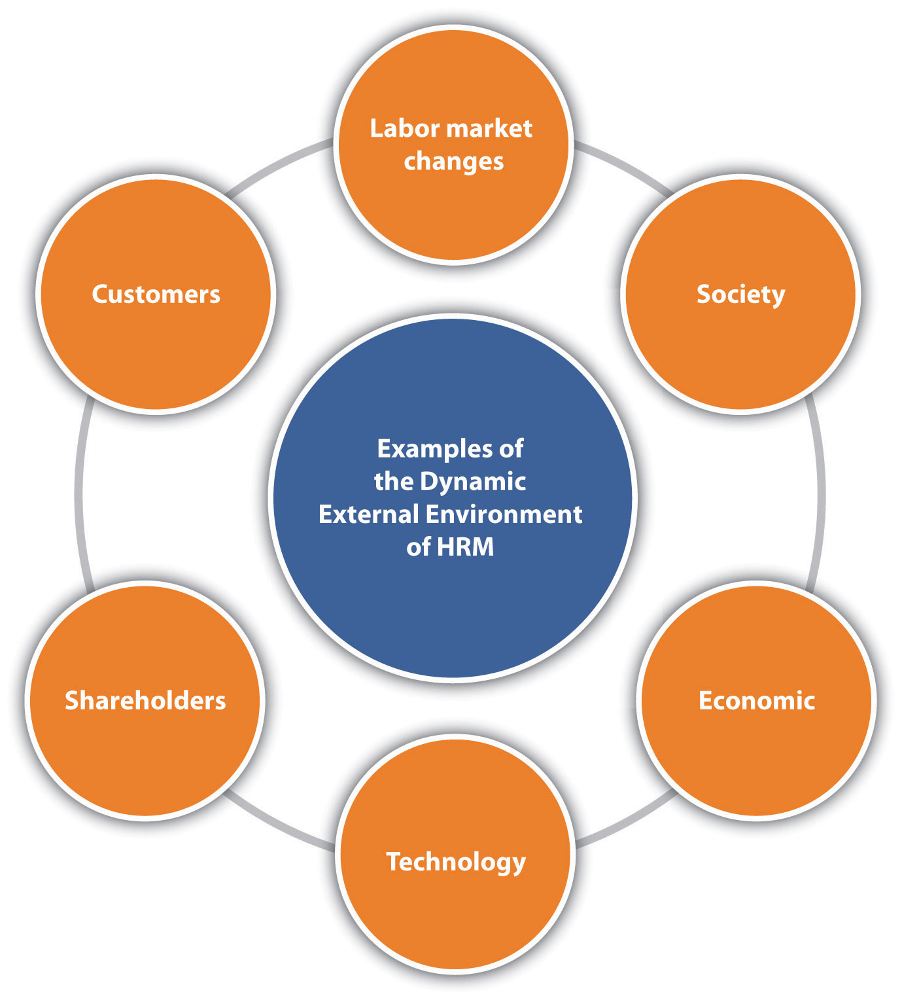

James stumbled into his position as the human resource manager. He had been working for Techno, Inc. for three years, and when the company grew, James moved from a management position into a human resource management position. Techno, Inc. is a technology and software consulting company for the music industry.
James didn’t have a good handle on how to effectively run a human resources (HR) department, so for much of the time he tried to figure it out as he went. When Techno started seeing rapid growth, he hired thirty people within a one-month period to meet the demand. Proud of his ability to accomplish his task of meeting the business’s current needs, James was rather pleased with himself. He had spent numerous hours mulling over recruitment strategies, putting together excellent compensation plans, and then eventually sifting through résumés as a small part of the hiring process. Now the organization had the right number of people needed to carry out its projects.
Fast forward five months, however, and it turned out the rapid growth was only temporary. James met with the executives of the business who told him the contracts they had acquired were finished, and there wasn’t enough new work coming in to make payroll next month if they didn’t let some people go. James felt frustrated because he had gone through so much effort to hire people, and now they would be laid off. Never mind the costs of hiring and training his department had taken on to make this happen. As James sat with the executives to determine who should be laid off, he felt sad for the people who had given up other jobs just five months before, only to be laid off.
After the meeting, James reflected on this situation and realized that if he had spoken with the executives of the company sooner, they would have shared information on the duration of the contracts, and he likely would have hired people differently, perhaps on a contract basis rather than on a full-time basis. He also considered the fact that the organization could have hired an outsourcing company to recruit workers for him. As Jason mulled this over, he realized that he needed a strategic plan to make sure his department was meeting the needs of the organization. He vowed to work with the company executives to find out more about the company’s strategic plan and then develop a human resource management (HRM) strategic plan to make sure Techno, Inc. has the right number of workers with the right skills, at the right time in the future.
In the past, human resource management (HRM) was called the personnel department. In the past, the personnel department hired people and dealt with the hiring paperwork and processes. It is believed the first human resource department was created in 1901 by the National Cash Register Company (NCR). The company faced a major strike but eventually defeated the union after a lockout. (We address unions in Chapter 12 "Working with Labor Unions".) After this difficult battle, the company president decided to improve worker relations by organizing a personnel department to handle grievances, discharges, safety concerns, and other employee issues. The department also kept track of new legislation surrounding laws impacting the organization. Many other companies were coming to the same realization that a department was necessary to create employee satisfaction, which resulted in more productivity. In 1913, Henry Ford saw employee turnover at 380 percent and tried to ease the turnover by increasing wages from $2.50 to $5.00, even though $2.50 was fair during this time period.Michael Losey, “HR Comes of Age,” HR Magazine, March 15, 1998, accessed July 11, 2011, http://findarticles.com/p/articles/mi_m3495/is_n3_v43/ai_20514399. Of course, this approach didn’t work for long, and these large companies began to understand they had to do more than hire and fire if they were going to meet customer demand.
More recently, however, the personnel department has divided into human resource management and human resource development, as these functions have evolved over the century. HRM is not only crucial to an organization’s success, but it should be part of the overall company’s strategic plan, because so many businesses today depend on people to earn profits. Strategic planning plays an important role in how productive the organization is.
Table 2.1 Examples of Differences between Personnel Management and HRM
| Personnel Management Focus | HRM Focus |
|---|---|
| Administering of policies | Helping to achieve strategic goals through people |
| Stand-alone programs, such as training | HRM training programs that are integrated with company’s mission and values |
| Personnel department responsible for managing people | Line managers share joint responsibility in all areas of people hiring and management |
| Creates a cost within an organization | Contributes to the profit objectives of the organization |
Most people agree that the following duties normally fall under HRM. Each of these aspects has its own part within the overall strategic plan of the organization:
In smaller organizations, the manager or owner is likely performing the HRM functions.Jan de Kok and Lorraine M. Uhlaner, “Organization Context and Human Resource Management in the Small Firm” (Tinbergen Institute Discussion Papers 01-038/3, Tinbergen Institute, 2001), accessed August 13, 2011, http://ideas.repec.org/s/dgr/uvatin.html. They hire people, train them, and determine how much they should be paid. Larger companies ultimately perform the same tasks, but because they have more employees, they can afford to employ specialists, or human resource managers, to handle these areas of the business. As a result, it is highly likely that you, as a manager or entrepreneur, will be performing HRM tasks, hence the value in understanding the strategic components of HRM.
Human resource strategyAn elaborate and systematic plan of action developed by the human resource department. is an elaborate and systematic plan of action developed by a human resource department. This definition tells us that an HR strategy includes detailed pathways to implement HRM strategic plans and HR plans. Think of the HRM strategic planA written document that consists of the major objectives the organization wants to achieve. as the major objectives the organization wants to achieve, and the HR planDetailed, written plan to ensure the strategic plan is achieved. as the specific activities carried out to achieve the strategic plan. In other words, the strategic plan may include long-term goals, while the HR plan may include short-term objectives that are tied to the overall strategic plan. As mentioned at the beginning of this chapter, human resource departments in the past were called personnel departments. This term implies that the department provided “support” for the rest of the organization. Companies now understand that the human side of the business is the most important asset in any business (especially in this global economy), and therefore HR has much more importance than it did twenty years ago. While personnel management mostly involved activities surrounding the hiring process and legal compliance, human resources involves much more, including strategic planning, which is the focus of this chapter. The Ulrich HR model, a common way to look at HRM strategic planning, provides an overall view of the role of HRM in the organization. His model is said to have started the movement that changed the view of HR; no longer merely a functional area, HR became more of a partnership within the organization. While his model has changed over the years, the current model looks at alignment of HR activities with the overall global business strategy to form a strategic partnership.David Ulrich and Wayne Brockbank, The HR Value Proposition (Boston: Harvard Business Press, 2005), 9–14. His newly revised model looks at five main areas of HR:
According to Ulrich,David Ulrich, “Evaluating the Ulrich Model,” Acerta, 2011, accessed July 11, 2011, http://www.goingforhr.be/extras/web-specials/hr-according-to-dave-ulrich#ppt_2135261. implementation of this model must happen with an understanding of the overall company objectives, problems, challenges, and opportunities. For example, the HR professional must understand the dynamic nature of the HRM environment, such as changes in labor markets, company culture and values, customers, shareholders, and the economy. Once this occurs, HR can determine how best to meet the needs of the organization within these five main areas.
Figure 2.1
To be successful in writing an HRM strategic plan, one must understand the dynamic external environment.
David Ulrich discusses the importance of bringing HR to the table in strategic planning.
Keeping the Ulrich model in mind, consider these four aspects when creating a good HRM strategic plan:
HR managers know the business and therefore know the needs of the business and can develop a plan to meet those needs. They also stay on top of current events, so they know what is happening globally that could affect their strategic plan. If they find out, for example, that an economic downturn is looming, they will adjust their strategic plan. In other words, the strategic plan needs to be a living document, one that changes as the business and the world changes.
Have you ever looked at your organization’s strategic plan? What areas does the plan address?
As we addressed in Section 2.1.2 "The Steps to Strategic Plan Creation", HRM strategic plans must have several elements to be successful. There should be a distinction made here: the HRM strategic plan is different from the HR plan. Think of the HRM strategic planA written document that consists of the major objectives the organization wants to achieve. as the major objectives the organization wants to achieve, while the HR planDetailed, written plan to ensure the strategic plan is achieved. consists of the detailed plans to ensure the strategic plan is achieved. Oftentimes the strategic plan is viewed as just another report that must be written. Rather than jumping in and writing it without much thought, it is best to give the plan careful consideration.
The goal of Section 2 "Conduct a Strategic Analysis" is to provide you with some basic elements to consider and research before writing any HRM plans.
A strategic analysis looks at three aspects of the individual HRM department:
Understanding of the company mission and values. It is impossible to plan for HRM if one does not know the values and missions of the organization. As we have already addressed in this chapter, it is imperative for the HR manager to align department objectives with organizational objectives. It is worthwhile to sit down with company executives, management, and supervisors to make sure you have a good understanding of the company mission and values.
Another important aspect is the understanding of the organizational life cycle. You may have learned about the life cycle in marketing or other business classes, and this applies to HRM, too. An organizational life cycleRefers to the introduction, growth, maturity, and decline of the organization, which can vary over time. A different HRM strategy is needed, depending on the organizational life cycle the company is experiencing. refers to the introduction, growth, maturity, and decline of the organization, which can vary over time. For example, when the organization first begins, it is in the introduction phase, and a different staffing, compensation, training, and labor/employee relations strategy may be necessary to align HRM with the organization’s goals. This might be opposed to an organization that is struggling to stay in business and is in the decline phase. That same organization, however, can create a new product, for example, which might again put the organization in the growth phase. Table 2.2 "Lifecycle Stages and HRM Strategy" explains some of the strategies that may be different depending on the organizational life cycle.
Understanding of the HRM department mission and values. HRM departments must develop their own departmental mission and values. These guiding principles for the department will change as the company’s overall mission and values change. Often the mission statement is a list of what the department does, which is less of a strategic approach. Brainstorming about HR goals, values, and priorities is a good way to start. The mission statement should express how an organization’s human resources help that organization meet the business goals. A poor mission statement might read as follows: “The human resource department at Techno, Inc. provides resources to hiring managers and develops compensation plans and other services to assist the employees of our company.”
A strategic statement that expresses how human resources help the organization might read as follows: “HR’s responsibility is to ensure that our human resources are more talented and motivated than our competitors’, giving us a competitive advantage. This will be achieved by monitoring our turnover rates, compensation, and company sales data and comparing that data to our competitors.”Gary Kaufman, “How to Fix HR,” Harvard Business Review, September 2006, accessed July 11, 2011, http://hbr.org/2006/09/how-to-fix-hr/ar/1. When the mission statement is written in this way, it is easier to take a strategic approach with the HR planning process.
Table 2.2 Lifecycle Stages and HRM Strategy
| Life Cycle Stage | Staffing | Compensation | Training and Development | Labor / Employee Relations |
|---|---|---|---|---|
| Introduction | Attract best technical and professional talent. | Meet or exceed labor market rates to attract needed talent. | Define future skill requirements and begin establishing career ladders. | Set basic employee-relations philosophy of organization. |
| Growth | Recruit adequate numbers and mix of qualifying workers. Plan management succession. Manage rapid internal labor market movements. | Meet external market but consider internal equity effects. Establish formal compensation structures. | Mold effective management team through management development and organizational development. | Maintain labor peace, employee motivation, and morale. |
| Maturity | Encourage sufficient turnover to minimize layoffs and provide new openings. Encourage mobility as reorganizations shift jobs around. | Control compensation costs. | Maintain flexibility and skills of an aging workforce. | Control labor costs and maintain labor peace. Improve productivity. |
| Decline | Plan and implement workforce reductions and reallocations; downsizing and outplacement may occur during this stage. | Implement tighter cost control. | Implement retraining and career consulting services. | Improve productivity and achieve flexibility in work rules. Negotiate job security and employment-adjustment policies |
Source: Seattle University Presentation, accessed July 11, 2011, http://fac-staff.seattleu.edu/gprussia/web/mgt383/HR%20Planning1.ppt.
In this step, the HRM professionals will analyze the challenges addressed in the first step. For example, the department may see that it is not strategically aligned with the company’s mission and values and opt to make changes to its departmental mission and values as a result of this information.
Many organizations and departments will use a strategic planning tool that identifies strengths, weaknesses, opportunities, and threats (SWOT analysis) to determine some of the issues they are facing. Once this analysis is performed for the business, HR can align itself with the needs of the business by understanding the business strategy. See Table 2.3 "Sample HR Department SWOT Analysis for Techno, Inc." for an example of how a company’s SWOT analysis can be used to develop a SWOT analysis for the HR department.
Once the alignment of the company SWOT is completed, HR can develop its own SWOT analysis to determine the gaps between HR’s strategic plan and the company’s strategic plan. For example, if the HR manager finds that a department’s strength is its numerous training programs, this is something the organization should continue doing. If a weakness is the organization’s lack of consistent compensation throughout all job titles, then the opportunity to review and revise the compensation policies presents itself. In other words, the company’s SWOT analysis provides a basis to address some of the issues in the organization, but it can be whittled down to also address issues within the department.
Table 2.3 Sample HR Department SWOT Analysis for Techno, Inc.
| Strengths | Hiring talented people |
| Company growth | |
| Technology implementation for business processes | |
| Excellent relationship between HRM and management/executives | |
| Weaknesses | No strategic plan for HRM |
| No planning for up/down cycles | |
| No formal training processes | |
| Lacking of software needed to manage business processes, including go-to-market staffing strategies | |
| Opportunities | Development of HRM staffing plan to meet industry growth |
| HRM software purchase to manage training, staffing, assessment needs for an unpredictable business cycle | |
| Continue development of HRM and executive relationship by attendance and participation in key meetings and decision-making processes | |
| Develop training programs and outside development opportunities to continue development of in-house marketing expertise | |
| Threats | Economy |
| Changing technology |
Based on the data gathered in the last step, the HRM manager should prioritize the goals and then put action plans together to deal with these challenges. For example, if an organization identifies that they lack a comprehensive training program, plans should be developed that address this need. (Training needs are discussed in Chapter 8 "Training and Development".) An important aspect of this step is the involvement of the management and executives in the organization. Once you have a list of issues you will address, discuss them with the management and executives, as they may see other issues or other priorities differently than you. Remember, to be effective, HRM must work with the organization and assist the organization in meeting goals. This should be considered in every aspect of HRM planning.
Once the HRM manager has met with executives and management, and priorities have been agreed upon, the plans are ready to be developed. Detailed development of these plans will be discussed in Section 2.2 "Writing the HRM Plan". Sometimes companies have great strategic plans, but when the development of the details occurs, it can be difficult to align the strategic plan with the more detailed plans. An HRM manager should always refer to the overall strategic plan before developing the HRM strategic plan and HR plans.
Even if a company does not have an HR department, HRM strategic plans and HR plans should still be developed by management. By developing and monitoring these plans, the organization can ensure the right processes are implemented to meet the ever-changing needs of the organization. The strategic plan looks at the organization as a whole, the HRM strategic plan looks at the department as a whole, and the HR plan addresses specific issues in the human resource department.
As addressed in Section 2.1 "Strategic Planning", the writing of an HRM strategic plan should be based on the strategic plans of the organization and of the department. Once the strategic plan is written, the HR professional can begin work on the HR plan. This is different from the strategic plan in that it is more detailed and more focused on the short term. The six parts described here are addressed in more detail in Chapter 4 "Recruitment", Chapter 5 "Selection", Chapter 6 "Compensation and Benefits", Chapter 7 "Retention and Motivation", Chapter 8 "Training and Development", Chapter 9 "Successful Employee Communication", Chapter 10 "Managing Employee Performance", and Chapter 11 "Employee Assessment".
Compensation Is a Touchy Subject
As the HR manager, you have access to sensitive data, such as pay information. As you are looking at pay for each employee in the marketing department, you notice that two employees with the same job title and performing the same job are earning different amounts of money. As you dig deeper, you notice the employee who has been with the company for the least amount of time is actually getting paid more than the person with longer tenure. A brief look at the performance evaluations shows they are both star performers. You determine that two different managers hired the employees, and one manager is no longer with the organization. How would you handle this?
How Would You Handle This?
https://api.wistia.com/v1/medias/1371287/embedThe author discusses the How Would You Handle This situation in this chapter at: https://api.wistia.com/v1/medias/1371287/embed.
Figure 2.3

As you can see from this figure, the company strategic plan ties into the HRM strategic plan, and from the HRM strategic plan, the HR plan can be developed.
The six parts of the HRM plan include the following:
Each chapter of this text addresses one area of the HR plan, but the next sections provide some basic knowledge of planning for each area.
The first part of an HR plan will consist of determining how many people are needed. This step involves looking at company operations over the last year and asking a lot of questions:
These are the questions to answer in this first step of the HR plan process. As you can imagine, this cannot be done alone. Involvement of other departments, managers, and executives should take place to obtain an accurate estimate of staffing needs for now and in the future. We discuss staffing in greater detail in Chapter 4 "Recruitment".
Many HR managers will prepare an inventory of all current employees, which includes their educational level and abilities. This gives the HR manager the big picture on what current employees can do. It can serve as a tool to develop employees’ skills and abilities, if you know where they are currently in their development. For example, by taking an inventory, you may find out that Richard is going to retire next year, but no one in his department has been identified or trained to take over his role. Keeping the inventory helps you know where gaps might exist and allows you to plan for these gaps. This topic is addressed further in Chapter 4 "Recruitment".
HR managers will also look closely at all job components and will analyze each job. By doing this analysis, they can get a better picture of what kinds of skills are needed to perform a job successfully. Once the HR manager has performed the needs assessment and knows exactly how many people, and in what positions and time frame they need to be hired, he or she can get to work on recruiting, which is also called a staffing planA detailed document that synthesizes information to determine how many people should be hired, when they should be hired, and what skills they should have.. This is addressed further in Chapter 4 "Recruitment".
Recruitment is an important job of the HR manager. More detail is provided in Chapter 4 "Recruitment". Knowing how many people to hire, what skills they should possess, and hiring them when the time is right are major challenges in the area of recruiting. Hiring individuals who have not only the skills to do the job but also the attitude, personality, and fit can be the biggest challenge in recruiting. Depending on the type of job you are hiring for, you might place traditional advertisements on the web or use social networking sites as an avenue. Some companies offer bonuses to employees who refer friends. No matter where you decide to recruit, it is important to keep in mind that the recruiting process should be fair and equitable and diversity should be considered. We discuss diversity in greater detail in Chapter 3 "Diversity and Multiculturalism".
Depending on availability and time, some companies may choose to outsource their recruiting processes. For some types of high-level positions, a head hunter will be used to recruit people nationally and internationally. A head hunterA person who specializes in matching jobs with people and usually works only with high-level positions. is a person who specializes in matching jobs with people, and they usually work only with high-level positions. Another option is to use an agency that specializes in hiring people for a variety of positions, including temporary and permanent positions. Some companies decide to hire temporary employees because they anticipate only a short-term need, and it can be less expensive to hire someone for only a specified period of time.
No matter how it is done, recruitment is the process of obtaining résumés of people interested in the job. In our next step, we review those résumés, interview, and select the best person for the job.
After you have reviewed résumés for a position, now is the time to work toward selecting the right person for the job. Although we discuss selection in great detail in Chapter 6 "Compensation and Benefits", it is worth a discussion here as well. Numerous studies have been done, and while they have various results, the majority of studies say it costs an average of $45,000 to hire a new manager.Susan Herman, Hiring Right: A Practical Guide (Thousand Oaks, CA: Sage, 1993), xv. While this may seem exaggerated, consider the following items that contribute to the cost:
Because it is so expensive to hire, it is important to do it right. First, résumés are reviewed and people who closely match the right skills are selected for interviews. Many organizations perform phone interviews first so they can further narrow the field. The HR manager is generally responsible for setting up the interviews and determining the interview schedule for a particular candidate. Usually, the more senior the position is, the longer the interview process takes, even up to eight weeks.John Crant, “How Long Does an Interview Process Take?” Jobsinminneapolis.com, December 2, 2009, accessed October 28, 2010, http://www.jobsinminneapolis.com/articles/title/How-Long-Does-an-Interview-Process-Take/3500/422. After the interviews are conducted, there may be reference checks, background checks, or testing that will need to be performed before an offer is made to the new employee. HR managers are generally responsible for this aspect. Once the applicant has met all criteria, the HR manager will offer the selected person the position. At this point, salary, benefits, and vacation time may be negotiated. Compensation is the next step in HR management.
What you decide to pay people is much more difficult than it seems. This issue is covered in greater detail in Chapter 6 "Compensation and Benefits". Pay systems must be developed that motivate employees and embody fairness to everyone working at the organization. However, organizations cannot offer every benefit and perk because budgets always have constraints. Even governmental agencies need to be concerned with compensation as part of their HR plan. For example, in 2011, Illinois State University gave salary increases of 3 percent to all faculty, despite state budget cuts in other areas. They reasoned that the pay increase was needed because of the competitive nature of hiring and retaining faculty and staff. The university president said, “Our employees have had a very good year and hopefully this is a good shot in the arm that will keep our morale high.”Stephanie Pawlowski, “Illinois State University to Get Salary Bump,” WJBC Radio, July 11, 2011, accessed July 11, 2011, http://wjbc.com/illinois-state-university-faculty-to-get-salary-bump.
The process in determining the right pay for the right job can have many variables, in addition to keeping morale high. First, as we have already discussed, the organization life cycle can determine the pay strategy for the organization. The supply and demand of those skills in the market, economy, region, or area in which the business is located is a determining factor in compensation strategy. For example, a company operating in Seattle may pay higher for the same job than their division in Missoula, Montana, because the cost of living is higher in Seattle. The HR manager is always researching to ensure the pay is fair and at market value. In Chapter 6 "Compensation and Benefits", we get into greater detail about the variety of pay systems, perks, and bonuses that can be offered. For many organizations, training is a perk. Employees can develop their skills while getting paid for it. Training is the next step in the HR planning process.
Once we have planned our staffing, recruited people, selected employees, and then compensated them, we want to make sure our new employees are successful. Training is covered in more detail in Chapter 8. One way we can ensure success is by training our employees in three main areas:
The last thing an HR manager should plan is the performance appraisal. While we discuss performance appraisals in greater detail in Chapter 11 "Employee Assessment", it is definitely worth a mention here, since it is part of the strategic plan. A performance appraisalA method by which job performance is measured. is a method by which job performance is measured. The performance appraisal can be called many different things, such as the following:
No matter what the name, these appraisals can be very beneficial in motivating and rewarding employees. The performance evaluation includes metrics on which the employee is measured. These metrics should be based on the job description, both of which the HR manager develops. Various types of rating systems can be used, and it’s usually up to the HR manager to develop these as well as employee evaluation forms. The HR manager also usually ensures that every manager in the organization is trained on how to fill out the evaluation forms, but more importantly, how to discuss job performance with the employee. Then the HR manager tracks the due dates of performance appraisals and sends out e-mails to those managers letting them know it is almost time to write an evaluation.
Have you ever been given a performance evaluation? What was the process and the outcome?
Communication is imperative in any workplace, but especially when giving and receiving a performance evaluation.
As you have learned from this chapter, human resource strategic planning involves understanding your company’s strategic plan and HR’s role in the organization. The planning aspect meets the needs of the strategic plan by knowing how many people should be hired, how many people are needed, and what kind of training they need to meet the goals of the organization. This section gives some tips on successful HR strategic planning.
Like many Fortune 500 companies throughout the world, IBM in India finds that picking the best prospects for job postings isn’t always easy. By using advanced analytics, however, it aims to connect the strategic plan, staffing needs, and the hiring process using a simple tool. The project was originally developed to assign people to projects internally at IBM, but IBM found this tool able to not only extract essential details like the number of years of experience but also make qualitative judgments, such as how good the person actually is for the job.Sridhar Chari, “IBM Automates Parsing of Resumes,” iStock Analyst, July 11, 2011, accessed July 11, 2011, http://www.istockanalyst.com/business/news/5283887/ibm-automates-parsing-of-resumes. This makes the software unique, as most résumé-scanning software programs can only search for specific keywords and are not able to assess the job fit or tie the criteria directly to the overall strategic plan. The project uses IBM India’s spoken web technology, in which the prospective employee answers a few questions, creating the equivalent of voice résumé. Then using these voice résumés, the hiring manager can easily search for those prospects who meet the needs of the organization and the objectives of the strategic plan.
Some of the challenges noted with this software include the recognition of language and dialect issues. However, the IBM human resources solution is still one of the most sophisticated of such tools to be developed. “Services is very people-intensive. Today, there is talk of a war for talent, but attracting the right kind of people is a challenge, yet unemployment is very high. Our solution applies sophisticated analytics to workforce management,” says Manish Gupta, director at IBM Research-India.Sridhar Chari, “IBM Automates Parsing of Resumes,” iStock Analyst, July 11, 2011, accessed July 11, 2011, http://www.istockanalyst.com/business/news/5283887/ibm-automates-parsing-of-resumes.
It is likely that this is only the beginning of the types of technology that allow HR professionals to tie their HR plans directly to a strategic plan with the touch of a few buttons.
Understanding the nature of the business is key to being successful in creating a strategic plan for HRM. Because every business is different, the needs of the business may change, depending on the economy, the season, and societal changes in our country. HR managers need to understand all these aspects of the business to better predict how many people are needed, what types of training are needed, and how to compensate people, for example. The strategic plan that the HR manager writes should address these issues. To address these issues, the HR manager should develop the departmental goals and HR plans based on the overall goals of the organization. In other words, HR should not operate alone but in tandem with the other parts of the organization. The HRM plan should reflect this.
Oftentimes a great strategic plan is written, taking lots of time, but isn’t actually put into practice for a variety of reasons, such as the following:
There is no point in developing a plan that isn’t going to be used. Developing the plan and then making changes as necessary are important to making it a valuable asset for the organization. A strategic plan should be a living document, in that it changes as organizational or external factors change. People can get too attached to a specific plan or way of doing things and then find it hard to change. The plan needs to change constantly or it won’t be of value.
A good strategic plan and HR plan should discuss the way “success” will be measured. For example, rather than writing, “Meet the hiring needs of the organization,” be more specific: “Based on sales forecasts from our sales department, hire ten people this quarter with the skills to meet our ten job openings.” This is a goal that is specific enough to be measured. These types of quantitative data also make it easier to show the relationship between HR and the organization, and better yet, to show how HR adds value to the bottom line. Likewise, if a company has a strategic objective to be a safe workplace, you might include a goal to “develop training to meet the needs of the organization.” While this is a great goal, how will this be measured? How will you know if you did what you were supposed to do? It might be difficult to measure this with such a general statement. On the other hand, a goal to “develop a safety training workshop and have all employees complete it by the end of the year” is specific and can be measured at the end to determine success.
What are some of your personal goals? Are these goals measureable?
It can be difficult to base an entire plan on forecasted numbers. As a result, an HRM department that is willing to change quickly to meet the needs of the organization proves its worthiness. Consider a sales forecast that called for fifteen new hires, but you find out months later the organization is having a hard time making payroll. Upon digging deeper, you find the sales forecasts were overexaggerated, and now you have fifteen people you don’t really need. By monitoring the changes constantly (usually done by asking lots of questions to other departments), you can be sure you are able to change your strategic plan as they come.
One of the major challenges in HRM, as we discuss in Chapter 1 "The Role of Human Resources", is having an awareness of what is happening from a legal perspective. Because most budgets are based on certain current laws, knowing when the law changes and how it will affect department budgets and planning (such as compensation planning) will create a more solid strategic plan. For example, if the minimum wage goes up in your state and you have minimum wage workers, reworking the budget and communicating this change to your accounting team is imperative in providing value to the organization. We will discuss various legislation throughout this book.
Chapter Summary
The author provides a video summary of the chapter.
We Merged…Now What?
Earlier this month, your company, a running equipment designer and manufacturer called Runners Paradise, merged with a smaller clothing design company called ActiveLeak. Your company initiated the buyout because of the excellent design team at ActiveLeak and their brand recognition, specifically for their MP3-integrated running shorts. Runners Paradise has thirty-five employees and ActiveLeak has ten employees. At ActiveLeak, the owner, who often was too busy doing other tasks, handled the HRM roles. As a result, ActiveLeak has no strategic plan, and you are wondering if you should develop a strategic plan, given this change. Here are the things you have accomplished so far:
From this point, you are not sure what to do to fully integrate the new organization.
1. Work in a group of three to five people. Choose a company and perform a SWOT analysis on that organization and be prepared to present it to the class.
2. Based on the SWOT analysis you performed in the first question, develop new objectives for the organization.